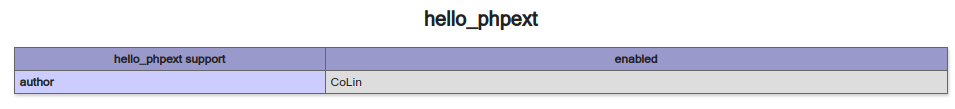

最近在D3CTF中发现了一道与PHP有关的Pwn题，当时由于事务繁忙没有及时学习，结果在不久之后的长城杯决赛中就遭到报应了，PHP pwn现场不会做。毕设做完之后，现在总算有时间拾起都有点陌生的CTF了。下面就来记录一下PHP pwn的学习过程。
在查阅资料后可以发现，实际上PHP pwn考的还是用户态pwn。具体而言，赛题一般使用的都是使用C语言编写的PHP扩展库文件。
PHP是一门基于C语言编写的高级语言，历史悠久。它支持使用C语言编写可直接用于PHP文件的二进制.so库文件。具体操作如下：
为方便实验，这里可以基于PHP docker容器完成下面的操作。笔者使用的是php:8.1-apache，这个版本是php的较新版本，且内置apache服务器与PHP源码，可以开箱即用。
在容器的/usr/src目录中保存有php 8.1版本的源码压缩包，解压即可。
在源码目录的ext目录中有一个PHP脚本ext_skel.php，运行后可指定目录与脚本名，用于生成PHP扩展的基础文件。
1 2 3 4 5 6 7 8 9 10 11 12 13 14 15 16 17 18 19 20 21 22 23 24 25 26 27 28 29 30 31 32 33 34 35 36 37 38 39 40 41 42 43 44 45 46 47 48 49 50 51 52 53 54 55 56 57 58 59 60 61 62 63 64 65 66 67 68 69 70 71 72 73 74 75 root@4bc0fa317dea:/usr/src/php-8.1.1/ext# ./ext_skel.php --help WHAT IT IS It's a tool for automatically creating the basic framework for a PHP extension. HOW TO USE IT Very simple. First, change to the ext/ directory of the PHP sources. Then run the following php ext_skel.php --ext extension_name and everything you need will be placed in directory ext/extension_name. If you don't need to test the existence of any external header files, libraries or functions in them, the extension is ready to be compiled in PHP. To compile the extension run the following: cd extension_name phpize ./configure make Don't forget to run tests once the compilation is done: make test Alternatively, to compile extension in the PHP: cd /path/to/php-src ./buildconf ./configure --enable-extension_name make make test TESTS=ext/extension_name/tests The definition of PHP_extension_NAME_VERSION will be present in the php_extension_name.h and injected into the zend_extension_entry definition. This is required by the PECL website for the version string conformity checks against package.xml SOURCE AND HEADER FILE NAME The ext_skel.php script generates 'extension_name.c' and 'php_extension_name.h' as the main source and header files. Keep these names. extension functions (User functions) must be named extension_name_function() When you need to expose extension functions to other extensions, expose functions strictly needed by others. Exposed internal function must be named php_extension_name_function() See also CODING_STANDARDS.md. OPTIONS php ext_skel.php --ext <name> [--experimental] [--author <name>] [--dir <path>] [--std] [--onlyunix] [--onlywindows] [--help] --ext <name> The name of the extension defined as <name> --experimental Passed if this extension is experimental, this creates the EXPERIMENTAL file in the root of the extension --author <name> Your name, this is used if --std is passed and for the CREDITS file --dir <path> Path to the directory for where extension should be created. Defaults to the directory of where this script lives --std If passed, the standard header used in extensions that is included in the core, will be used --onlyunix Only generate configure scripts for Unix --onlywindows Only generate configure scripts for Windows --help This help
基本只需要使用--ext与--dir选项即可。这里笔者将脚本目录设置为/var/www/my_extension。
执行命令后，在/var/www/my_extension中自动生成了一些文件：
1 2 3 4 5 6 7 8 9 10 11 12 root@4bc0fa317dea:/var/www/my_extension/hello_phpext# ls -al total 40 drwxr-xr-x 3 root root 4096 Jun 19 12:39 . drwxr-xr-x 3 root root 4096 Jun 19 12:36 .. -rw-r--r-- 1 root root 500 Jun 19 12:32 .gitignore -rw-r--r-- 1 root root 3490 Jun 19 12:32 config.m4 -rw-r--r-- 1 root root 253 Jun 19 12:32 config.w32 -rw-r--r-- 1 root root 1971 Jun 19 12:32 hello_phpext.c -rw-r--r-- 1 root root 110 Jun 19 12:32 hello_phpext.stub.php -rw-r--r-- 1 root root 558 Jun 19 12:32 hello_phpext_arginfo.h -rw-r--r-- 1 root root 372 Jun 19 12:32 php_hello_phpext.h drwxr-xr-x 2 root root 4096 Jun 19 12:32 tests
config.m4：Unix下的Build Config配置文件，将通过它完成配置与安装。
hello_phpext.c：包含主要逻辑的C语言文件，我们扩展函数的保存位置。
php_hello_phpext.h：头文件，包含结构体定义等。
为方便后续对我们的扩展进行测试，首先需要搞清楚应该如何将扩展加载到PHP中。
使用下面的命令可以完成扩展加载：
1 2 3 4 phpize ./configure make make install
执行上述命令后，我们的PHP扩展库文件就被复制到了/usr/local/lib/php/extensions/no-debug-non-zts-20210902目录中。
随后，我们还需要修改php.ini文件。在8.1.1版本的PHP中，/usr/local/etc/php目录下有两个文件：php.ini-development与php.ini-production，前者一般用于开发调试而后者用于发布。这里使用前者，在代码中添加一行：
1 extension=hello_phpext.so
随后将其复制一份保存为php.ini，重启apache2服务，即可将我们的扩展加载到PHP中。
上述初始化操作完成后，hello_phpext.c中预先定义了一些必要的结构以及两个示例函数：
1 2 3 4 5 6 7 8 9 10 11 12 13 14 15 16 17 18 19 20 21 22 23 24 25 26 27 28 29 30 31 32 33 34 35 36 37 38 39 40 41 42 43 44 45 46 47 48 49 50 51 52 53 54 55 56 57 58 59 60 61 62 63 64 65 66 67 68 69 70 71 72 73 74 75 76 77 78 79 80 81 82 83 84 85 86 #ifdef HAVE_CONFIG_H # include "config.h" #endif #include "php.h" #include "ext/standard/info.h" #include "php_hello_phpext.h" #include "hello_phpext_arginfo.h" #ifndef ZEND_PARSE_PARAMETERS_NONE #define ZEND_PARSE_PARAMETERS_NONE() \ ZEND_PARSE_PARAMETERS_START(0, 0) \ ZEND_PARSE_PARAMETERS_END() #endif PHP_FUNCTION(test1) { ZEND_PARSE_PARAMETERS_NONE(); php_printf("The extension %s is loaded and working!\r\n" , "hello_phpext" ); } PHP_FUNCTION(test2) { char *var = "World" ; size_t var_len = sizeof ("World" ) - 1 ; zend_string *retval; ZEND_PARSE_PARAMETERS_START(0 , 1 ) Z_PARAM_OPTIONAL Z_PARAM_STRING (var, var_len) ZEND_PARSE_PARAMETERS_END () ; retval = strpprintf(0 , "Hello %s" , var); RETURN_STR(retval); } PHP_RINIT_FUNCTION(hello_phpext) { #if defined(ZTS) && defined(COMPILE_DL_HELLO_PHPEXT) ZEND_TSRMLS_CACHE_UPDATE(); #endif return SUCCESS; } PHP_MINFO_FUNCTION(hello_phpext) { php_info_print_table_start(); php_info_print_table_header(2 , "hello_phpext support" , "enabled" ); php_info_print_table_end(); } zend_module_entry hello_phpext_module_entry = { STANDARD_MODULE_HEADER, "hello_phpext" , ext_functions, NULL , NULL , PHP_RINIT(hello_phpext), NULL , PHP_MINFO(hello_phpext), PHP_HELLO_PHPEXT_VERSION, STANDARD_MODULE_PROPERTIES }; #ifdef COMPILE_DL_HELLO_PHPEXT # ifdef ZTS ZEND_TSRMLS_CACHE_DEFINE() # endif ZEND_GET_MODULE(hello_phpext) #endif
这里包含了大量PHP相关的宏定义，一眼看过去确实难以理解，下面将结合PHP源码进行分析。
PHP_FUNCTION这是用于定义PHP库函数的宏定义，在8.1.1版本PHP源码中的定义如下：
1 2 3 4 #define ZEND_NAMED_FUNCTION(name) void ZEND_FASTCALL name(INTERNAL_FUNCTION_PARAMETERS) #define ZEND_FUNCTION(name) ZEND_NAMED_FUNCTION(zif_##name)
即上面的PHP_FUNCTION(test1)就相当于void ZEND_FASTCALL test1(INTERNAL_FUNCTION_PARAMETERS)。
INTERNAL_FUNCTION_PARAMETERS上面的函数定义需要使用参数定义的相关宏定义INTERNAL_FUNCTION_PARAMETERS，它的定义如下：
1 2 3 #define INTERNAL_FUNCTION_PARAMETERS zend_execute_data *execute_data, zval *return_value
即所有的PHP库函数都会通过第一个参数execute_data传入所有C函数需要的参数，由第二个参数return_value获取返回值，库函数本身的返回值恒为void。
zend_execute_data等这是一个结构体，用于保存C库函数的相关参数的数据结构。
1 2 3 4 5 6 7 8 9 10 11 12 13 14 15 16 17 typedef struct _zend_execute_data zend_execute_data ;struct _zend_execute_data { const zend_op *opline; zend_execute_data *call; zval *return_value; zend_function *func; zval This; zend_execute_data *prev_execute_data; zend_array *symbol_table; void **run_time_cache; zend_array *extra_named_params; };
这里引用了另外一些结构体，下面给出部分定义。
1 2 3 4 5 6 7 8 9 10 11 12 13 14 15 16 17 18 19 20 21 22 23 24 25 26 27 28 29 30 31 32 33 34 35 36 37 38 39 40 41 42 43 44 45 46 47 48 49 50 51 52 typedef struct _zval_struct zval ;typedef union _zend_value { zend_long lval; double dval; zend_refcounted *counted; zend_string *str; zend_array *arr; zend_object *obj; zend_resource *res; zend_reference *ref; zend_ast_ref *ast; zval *zv; void *ptr; zend_class_entry *ce; zend_function *func; struct { uint32_t w1; uint32_t w2; } ww; } zend_value; struct _zval_struct { zend_value value; union { uint32_t type_info; struct { ZEND_ENDIAN_LOHI_3( zend_uchar type, zend_uchar type_flags, union { uint16_t extra; } u) } v; } u1; union { uint32_t next; uint32_t cache_slot; uint32_t opline_num; uint32_t lineno; uint32_t num_args; uint32_t fe_pos; uint32_t fe_iter_idx; uint32_t property_guard; uint32_t constant_flags; uint32_t extra; } u2; };
可以看到，PHP使用zend_value定义PHP数据类型，包括整数、浮点数、数组、对象、函数、类等。
ZEND_PARSE_PARAMETERS_START等在C库函数中，有一个重要的流程——解析PHP参数。从上面的示例C文件中，可以看到这样一段：
1 2 3 4 ZEND_PARSE_PARAMETERS_START(0 , 1 ) Z_PARAM_OPTIONAL Z_PARAM_STRING (var, var_len) ZEND_PARSE_PARAMETERS_END () ;
这些宏定义均在/Zend/zend_API.h中定义，将这些宏全部展开带入参数之后，就变成了下面这个样子（已删除无效控制流）：
1 2 3 4 5 6 7 8 9 10 11 12 13 14 15 16 17 18 19 20 21 22 23 24 25 26 27 28 29 30 31 32 33 34 35 36 37 38 39 40 41 42 43 44 45 46 47 48 49 50 51 52 53 54 55 56 57 do { \ const int _flags = (0 ); \ uint32_t _min_num_args = (0 ); \ uint32_t _max_num_args = (uint32_t ) (1 ); \ uint32_t _num_args = (execute_data)->This.u2.num_args; \ uint32_t _i = 0 ; \ zval *_real_arg, *_arg = NULL ; \ zend_expected_type _expected_type = Z_EXPECTED_LONG; \ char *_error = NULL ; \ bool _dummy = 0 ; \ bool _optional = 0 ; \ int _error_code = ZPP_ERROR_OK; \ ((void )_i); \ ((void )_real_arg); \ ((void )_arg); \ ((void )_expected_type); \ ((void )_error); \ ((void )_optional); \ ((void )_dummy); \ \ do { \ if (UNEXPECTED(_num_args < _min_num_args) || \ UNEXPECTED(_num_args > _max_num_args)) { \ if (!(_flags & ZEND_PARSE_PARAMS_QUIET)) { \ zend_wrong_parameters_count_error(_min_num_args, _max_num_args); \ } \ _error_code = ZPP_ERROR_FAILURE; \ break ; \ } \ _real_arg = ZEND_CALL_VAR_NUM(execute_data, -1 ); _optional = 1 ; ++_i; \ ZEND_ASSERT(_i <= _min_num_args || _optional==1 ); \ ZEND_ASSERT(_i > _min_num_args || _optional==0 ); \ if (_optional) { \ if (UNEXPECTED(_i >_num_args)) break ; \ } \ _real_arg++; \ _arg = _real_arg; \ if (UNEXPECTED(!zend_parse_arg_string(_arg, &var, &var_len, 0 , _i))) { \ _expected_type = 0 ? Z_EXPECTED_STRING_OR_NULL : Z_EXPECTED_STRING; \ _error_code = ZPP_ERROR_WRONG_ARG; \ break ; \ } ZEND_ASSERT(_i == _max_num_args || _max_num_args == (uint32_t ) -1 ); \ } while (0 ); \ if (UNEXPECTED(_error_code != ZPP_ERROR_OK)) { \ if (!(_flags & ZEND_PARSE_PARAMS_QUIET)) { \ zend_wrong_parameter_error(_error_code, _i, _error, _expected_type, _arg); \ } \ return ; \ } \ } while (0 );
由于C语言没有类的概念，因此对于一些需要泛型的操作只有通过宏定义实现才能让代码更加简洁，也提升了代码审计的难度。这段代码有一个比较有趣的地方——大量使用了do ... while(0)的控制流结构，这看上去冗余，但实际上是为了隔离作用域，让宏定义中的临时变量具有临时作用域，使宏定义调用方对于临时变量不可见，避免调用方多次调用相同宏定义时出现变量重复定义的问题。
在上面的代码中，关键逻辑实际上就是一行，即调用zend_parse_arg_string函数进行参数解析。前后添加了一些安全检查，包括参数个数、解析是否成功等。下面简单分析一下zend_parse_arg_string的相关逻辑。
zend_parse_arg_string1 2 3 4 5 6 7 8 9 10 11 12 13 14 15 16 17 18 19 20 21 22 23 24 25 26 27 28 29 30 static zend_always_inline bool zend_parse_arg_str (zval *arg, zend_string **dest, bool check_null, uint32_t arg_num) { if (EXPECTED(Z_TYPE_P(arg) == IS_STRING)) { *dest = Z_STR_P(arg); } else if (check_null && Z_TYPE_P(arg) == IS_NULL) { *dest = NULL ; } else { return zend_parse_arg_str_slow(arg, dest, arg_num); } return 1 ; } static zend_always_inline bool zend_parse_arg_string (zval *arg, char **dest, size_t *dest_len, bool check_null, uint32_t arg_num) { zend_string *str; if (!zend_parse_arg_str(arg, &str, check_null, arg_num)) { return 0 ; } if (check_null && UNEXPECTED(!str)) { *dest = NULL ; *dest_len = 0 ; } else { *dest = ZSTR_VAL(str); *dest_len = ZSTR_LEN(str); } return 1 ; }
可以清晰地看到这里PHP源代码对传入的zval进行解析的过程。由于zval结构中的zend_value是一个联合类型，因此可以用于表示多种数据类型，相互转换也非常简单。
由此可知，ZEND_PARSE_PARAMETERS_START与ZEND_PARSE_PARAMETERS_END之间即为C库函数解析PHP参数的流程，在ZEND_PARSE_PARAMETERS_START中，需要指定要解析第几个参数，随后在内部可通过多次使用Z_PARAM_xxx进行参数解析。
zend_module_entry这是一个在预先定义的C库文件中被使用的数据结构。从最上面的代码注释可以看到，这个数据类型定义了PHP模块的基本信息，包括扩展的名字、库函数的入口（定义的所有导出函数）、初始化函数、关闭函数、请求初始化函数、请求关闭函数、phpinfo钩子函数、版本等。
1 2 3 4 5 6 7 8 9 10 11 12 13 14 15 16 17 18 19 PHP_MINFO_FUNCTION(hello_phpext) { php_info_print_table_start(); php_info_print_table_header(2 , "hello_phpext support" , "enabled" ); php_info_print_table_end(); } zend_module_entry hello_phpext_module_entry = { STANDARD_MODULE_HEADER, "hello_phpext" , ext_functions, NULL , NULL , PHP_RINIT(hello_phpext), NULL , PHP_MINFO(hello_phpext), PHP_HELLO_PHPEXT_VERSION, STANDARD_MODULE_PROPERTIES };
其中，PHP_MINFO用于定义挂钩在phpinfo函数中的C库函数。它的作用是当PHP代码调用phpinfo()函数时显示PHP基本信息时，能够在其上附加显示本扩展的基本信息，包括扩展名、作者等。
php_info_print_table_start：开始显示phpinfo表格。php_info_print_table_header：输出表格头，第一个参数为需要添加的列数，后面的参数个数需要等于第一个参数的值，表示不同列的输出内容。php_info_print_table_row：输出表格内容，第一个参数为该行的列数，后面参数个数等于第一个参数的值，表示不同列的输出内容。php_info_print_table_end：结束输出phpinfo表格。
对于下面的PHP_MINFO_FUNCTION定义，调用phpinfo后可看到下图表格的输出。
1 2 3 4 5 6 7 PHP_MINFO_FUNCTION(hello_phpext) { php_info_print_table_start(); php_info_print_table_header(2 , "hello_phpext support" , "enabled" ); php_info_print_table_row(2 , "author" , "CoLin" ); php_info_print_table_end(); }

zend_function_entry等这是用于表示C库的导出PHP函数的结构体，定义如下：
1 2 3 4 5 6 7 8 9 typedef struct _zend_function_entry { const char *fname; zif_handler handler; const struct _zend_internal_arg_info *arg_info ; uint32_t num_args; uint32_t flags; } zend_function_entry;
在hello_phpext_arginfo.h中，有一个static const zend_function_entry ext_functions[]的数组结构，其中即保存了本扩展中导出的，可在PHP代码中直接调用的函数。
1 2 3 4 5 static const zend_function_entry ext_functions[] = { ZEND_FE(test1, arginfo_test1) ZEND_FE(test2, arginfo_test2) ZEND_FE_END };
其中的每一个导出函数都使用ZEND_FE宏定义包裹，第一个参数为函数名，第二个参数为函数的参数信息。
头文件中也对参数类型进行了定义：
1 2 3 4 5 6 ZEND_BEGIN_ARG_WITH_RETURN_TYPE_INFO_EX(arginfo_test1, 0 , 0 , IS_VOID, 0 ) ZEND_END_ARG_INFO() ZEND_BEGIN_ARG_WITH_RETURN_TYPE_INFO_EX(arginfo_test2, 0 , 0 , IS_STRING, 0 ) ZEND_ARG_TYPE_INFO_WITH_DEFAULT_VALUE(0 , str, IS_STRING, 0 , "\"\"" ) ZEND_END_ARG_INFO()
下面给出这些宏的定义：
1 2 3 4 5 6 7 8 9 10 11 12 13 14 15 16 17 18 19 20 21 22 23 #define ZEND_BEGIN_ARG_WITH_RETURN_TYPE_INFO_EX(name, return_reference, required_num_args, type, allow_null) \ ZEND_BEGIN_ARG_WITH_RETURN_TYPE_INFO_EX2(name, return_reference, required_num_args, type, allow_null, 0) #define ZEND_BEGIN_ARG_WITH_RETURN_TYPE_INFO_EX2(name, return_reference, required_num_args, type, allow_null, is_tentative_return_type) \ static const zend_internal_arg_info name[] = { \ { (const char*)(zend_uintptr_t)(required_num_args), ZEND_TYPE_INIT_CODE(type, allow_null, _ZEND_ARG_INFO_FLAGS(return_reference, 0, is_tentative_return_type)), NULL }, #define ZEND_END_ARG_INFO() }; typedef struct _zend_internal_arg_info { const char *name; zend_type type; const char *default_value; } zend_internal_arg_info;
因此，ZEND_BEGIN_ARG_WITH_RETURN_TYPE_INFO_EX(arginfo_test1, 0, 0, IS_VOID, 0)展开就是：
1 2 3 static const zend_internal_arg_info arginfo_test1[] = { \ { (const char *)(zend_uintptr_t )(0 ), ZEND_TYPE_INIT_CODE(IS_VOID, 0 , _ZEND_ARG_INFO_FLAGS(0 , 0 , 0 )), NULL },
其中括号未闭合，用于在下面继续定义其他参数。这个宏定义实际上是首先定义了返回值的类型，它的5个参数分别代表：
1 - 函数名
2 - 返回值是否为引用值
3 - 必需的参数数量
4 - 返回值类型
5 - 返回值是否允许为空
这里需要注意的是，参数3表示必需的参数数量，在PHP函数中还可以添加一些可选参数。即即使传入的必需参数数量为0，在ZEND_BEGIN_ARG_WITH_RETURN_TYPE_INFO_EX之后依然可以定义任意多的可选参数。即使PHP代码中没有传入这些可选参数，在库函数中只是会被当成默认值看待，而不会直接报错。
其中，对于ZEND_TYPE_INIT_CODE的定义如下：
1 2 3 #define ZEND_TYPE_INIT_CODE(code, allow_null, extra_flags) \ ZEND_TYPE_INIT_MASK(((code) == _IS_BOOL ? MAY_BE_BOOL : ((code) == IS_MIXED ? MAY_BE_ANY : (1 << (code)))) \ | ((allow_null) ? _ZEND_TYPE_NULLABLE_BIT : 0) | (extra_flags))
它的3个参数分别代表数据类型、是否允许空、其他参数标志位。
在ZEND_BEGIN_ARG_WITH_RETURN_TYPE_INFO_EX之后，可以定义所有参数。定义使用下面的宏定义：
1 2 3 4 #define ZEND_ARG_TYPE_INFO(pass_by_ref, name, type_hint, allow_null) \ { #name, ZEND_TYPE_INIT_CODE(type_hint, allow_null, _ZEND_ARG_INFO_FLAGS(pass_by_ref, 0, 0)), NULL }, #define ZEND_ARG_TYPE_INFO_WITH_DEFAULT_VALUE(pass_by_ref, name, type_hint, allow_null, default_value) \ { #name, ZEND_TYPE_INIT_CODE(type_hint, allow_null, _ZEND_ARG_INFO_FLAGS(pass_by_ref, 0, 0)), default_value },
type_hint即为参数的数据类型，pass_by_ref表示是否传入引用。
在C语言的PHP扩展中，可以完成对PHP类的定义，包括类属性、类方法的定义等。这里以PHP源码为例。
在/ext/com_dotnet/com_persist_arginfo.h中，C代码定义了一个COMPersistHelper类。要想让这个类在PHP代码中能够直接使用，需要一个类注册函数：
1 2 3 4 5 6 7 8 9 10 11 12 static zend_class_entry *register_class_COMPersistHelper (void ) { zend_class_entry ce, *class_entry; INIT_CLASS_ENTRY(ce, "COMPersistHelper" , class_COMPersistHelper_methods); class_entry = zend_register_internal_class_ex(&ce, NULL ); class_entry->ce_flags |= ZEND_ACC_FINAL; return class_entry; }
类注册代码具有固定的函数声明格式，其必为静态函数，返回值必为zend_class_entry*，函数名应被命名为register_class_xxx，无参。
在函数中，必需进行类的初始化，即调用INIT_CLASS_ENTRY宏，这个宏的第一个参数固定，第二个参数为类名，第三个参数为定义类中方法的数据结构：
1 2 3 4 5 6 7 8 9 10 11 12 13 static const zend_function_entry class_COMPersistHelper_methods[] = { ZEND_ME(COMPersistHelper, __construct, arginfo_class_COMPersistHelper___construct, ZEND_ACC_PUBLIC) ZEND_ME(COMPersistHelper, GetCurFileName, arginfo_class_COMPersistHelper_GetCurFileName, ZEND_ACC_PUBLIC) ZEND_ME(COMPersistHelper, SaveToFile, arginfo_class_COMPersistHelper_SaveToFile, ZEND_ACC_PUBLIC) ZEND_ME(COMPersistHelper, LoadFromFile, arginfo_class_COMPersistHelper_LoadFromFile, ZEND_ACC_PUBLIC) ZEND_ME(COMPersistHelper, GetMaxStreamSize, arginfo_class_COMPersistHelper_GetMaxStreamSize, ZEND_ACC_PUBLIC) ZEND_ME(COMPersistHelper, InitNew, arginfo_class_COMPersistHelper_InitNew, ZEND_ACC_PUBLIC) ZEND_ME(COMPersistHelper, LoadFromStream, arginfo_class_COMPersistHelper_LoadFromStream, ZEND_ACC_PUBLIC) ZEND_ME(COMPersistHelper, SaveToStream, arginfo_class_COMPersistHelper_SaveToStream, ZEND_ACC_PUBLIC) ZEND_FE_END };
若需要定义类中的方法，只需要完成对这个数组的定义即可，数组应命名为class_xxx_methods，数组中需要使用ZEND_ME宏表示类方法项。这个宏各个参数的含义如下：
1 - 类名，不加引号。
2 - 方法名，前加__的是内置函数，如构造函数、setter、getter等。
3 - 方法的参数定义，与函数参数定义方式相同。
4 - 类访问权限，如ZEND_ACC_PUBLIC指public访问权限等。
如果需要定义类属性，则需在类注册函数中完成定义。下面是PHP类DOMDocumentType类的注册函数的一部分：
1 2 3 4 5 6 7 zval property_name_default_value; ZVAL_UNDEF(&property_name_default_value); zend_string *property_name_name = zend_string_init("name" , sizeof ("name" ) - 1 , 1 ); zend_declare_typed_property(class_entry, property_name_name, &property_name_default_value, ZEND_ACC_PUBLIC, NULL , (zend_type) ZEND_TYPE_INIT_MASK(MAY_BE_STRING)); zend_string_release(property_name_name);
在上面的代码中，为类DOMDocumentType定义了一个属性，名为name，这里是使用zend_string_init定义字符串，前两个参数分别为char*和长度，第3个长度指是否为永久字符串。随后，通过zend_declare_typed_property正式将属性添加到类中，参数列表如下：
1 - 注册函数的参数
2 - 属性名
3 - 默认值
4 - 访问权限
5 - 文档字符串
6 - 属性类型
1 2 3 4 5 6 7 8 zend_string *property_entities_class_DOMNamedNodeMap = zend_string_init("DOMNamedNodeMap" , sizeof ("DOMNamedNodeMap" )-1 , 1 ); zval property_entities_default_value; ZVAL_UNDEF(&property_entities_default_value); zend_string *property_entities_name = zend_string_init("entities" , sizeof ("entities" ) - 1 , 1 ); zend_declare_typed_property(class_entry, property_entities_name, &property_entities_default_value, ZEND_ACC_PUBLIC, NULL , (zend_type) ZEND_TYPE_INIT_CLASS(property_entities_class_DOMNamedNodeMap, 0 , 0 )); zend_string_release(property_entities_name);
上面的代码定义了数据类型为类的类属性，这里是定义一个DOMNamedNodeMap类型的类属性，需要使用ZEND_TYPE_INIT_CLASS宏定义。最后的zend_string_release即释放字符串值。